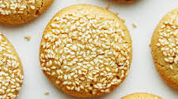

Tahini Cookies

Ingredients:
- 260 grams flour
- 1 ts baking powder
- 0.5 ts salt
- 170 grams butter, room temperature
- 130 grams sugar
- 200 grams tahina
- 3 tbs honey
Method:
- Sift flour and mix in baking powder and salt.
- Heat oven to 180 degrees celcius.
- Mix buter, sugar and honey at medium speed until light and fluffy, appr. 3 minutes.
- Beat in the tahina, then add dry ingredients in 2 batches. The dough will be slightly sticky.
- Put sesame seeds in a bowl
- Scoop heaping tablespoons of dough and roll into balls. Dip balls into sesame seeds, pressing to adhere, and place sesame side up on baking sheet, spacing 2 inches apart.
- Bake cookies 10-15 minutes until golden brown, rotate sheets half way.
- Let cool on the baking sheets, the cookies will firm up.